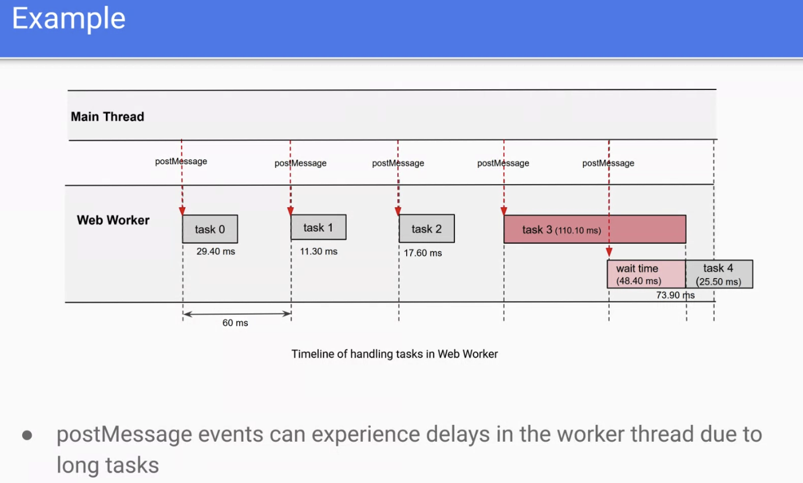
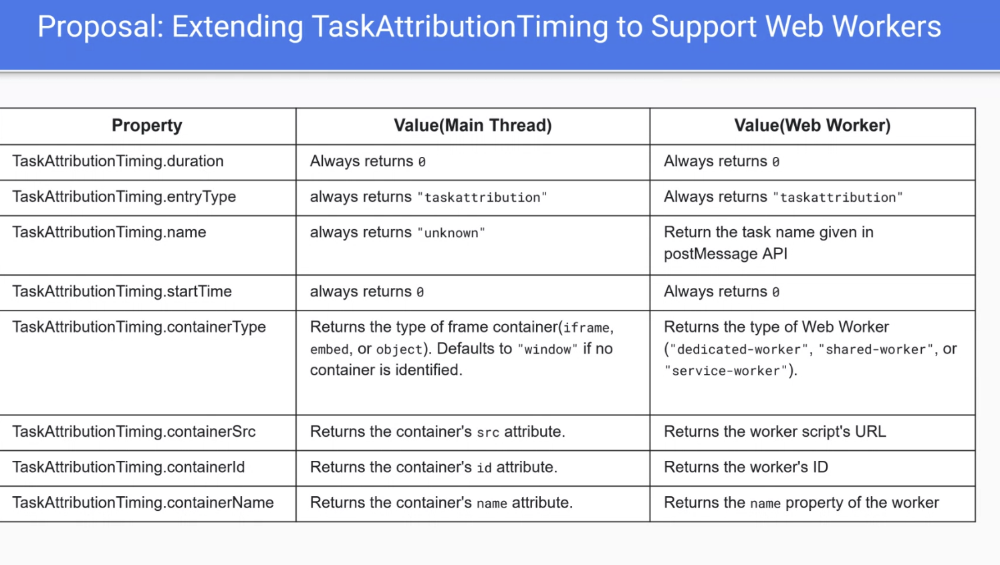
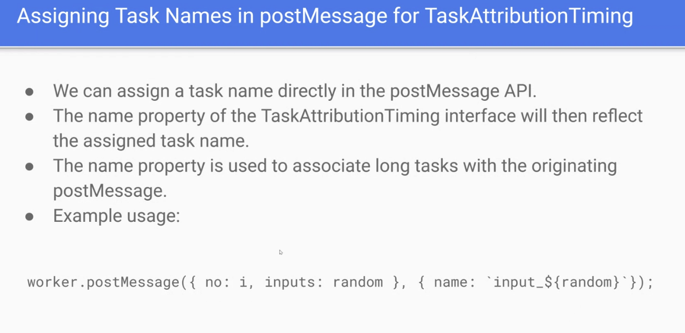
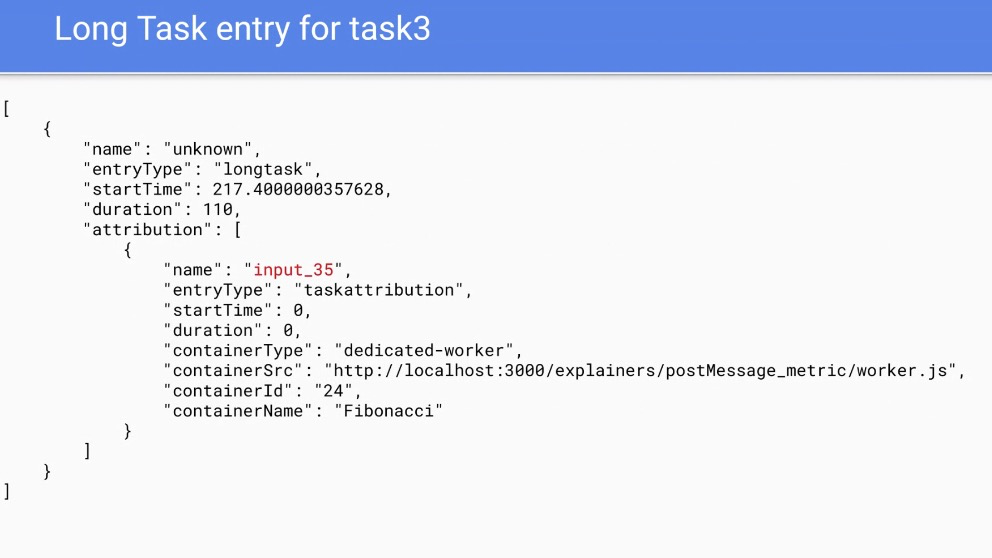
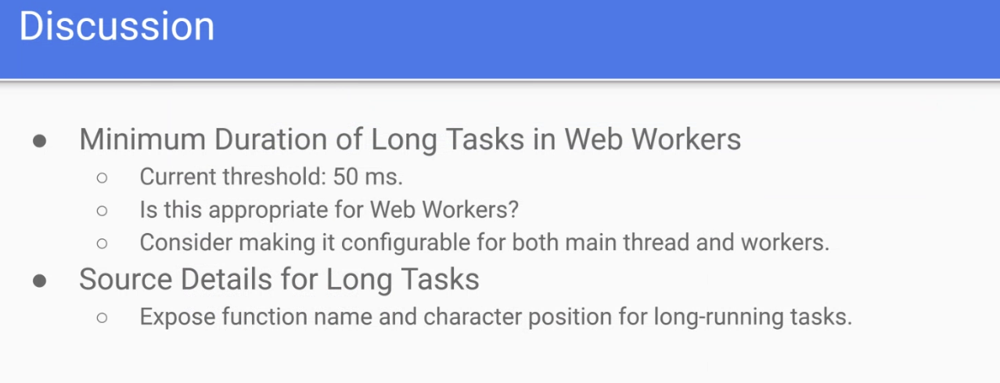

Participants
- Nic Jansma, Yoav Weiss, Andy Davies, Dan Shappir, Patrick Meenan, Noam Rosenthal, Alex Christensen, Giacomo Zecchini, Guohui Deng, Joone Hur, Noam Helfman, Andy Luhrs, Amiya Gupta, Michal Mocny, Abhishek Ghosh, Annie Sullivan, Benjamin De Kosnik, Philip Tellis, Carine Bournez, Jose Dapena Paz, Sergey Chernyshev, Victor Huang, Ian Clelland
Admin
- December 19th - nothing in the queue to discuss. Let’s aim to meet, but then skip if there’s nothing
- Will skip January 2nd as many people will be on vacation
- Otherwise January 16th
- Sent out a CFC two weeks ago for the adoption of Element Timing. Please look at that and reply in the next week if you have opinions
Minutes
Long Tasks for workers - Joone
Recording
- Joone: working with outlook at Microsoft
- .. Long Tasks help developers detect JS issues on the main thread
- … but there’s no way to identify issues in workers
- … propose to extend the long task API to support workers
- …

height: 376.00px; margin-left: 0.00px; margin-top: 0.00px; transform: rotate(0.00rad) translateZ(0px); -webkit-transform: rotate(0.00rad) translateZ(0px);" title=""> - If a task on the worker take longer than expected, postMessages on the worker don’t get handled, and there’s no way to identify that today

height: 353.33px; margin-left: 0.00px; margin-top: 0.00px; transform: rotate(0.00rad) translateZ(0px); -webkit-transform: rotate(0.00rad) translateZ(0px);" title="">
- So want to change the postMessage API to add a “task name”
- “Container type” could add the type of the web worker
- … containerSrc, containerID and name can return details about the worker
- … Need to update the postMessage API to set the name of the task

height: 304.00px; margin-left: 0.00px; margin-top: 0.00px; transform: rotate(0.00rad) translateZ(0px); -webkit-transform: rotate(0.00rad) translateZ(0px);" title="">
height: 350.67px; margin-left: 0.00px; margin-top: 0.00px; transform: rotate(0.00rad) translateZ(0px); -webkit-transform: rotate(0.00rad) translateZ(0px);" title="">- Being able to tie the postMessage to the task can give us more details about what went wrong

height: 238.67px; margin-left: 0.00px; margin-top: 0.00px; transform: rotate(0.00rad) translateZ(0px); -webkit-transform: rotate(0.00rad) translateZ(0px);" title="">- Andy: quick question about attribution. What’s the thinking behind startTime and duration in attribution always being zero?
- Joone: We already have these values in the LT entry
- Andy: that might be confusing
- Joone: Followed the current LT spec, but maybe we can revise that
- Noam: I think this mixes a few features together
- .. it mixes cross thread timeline posting into this feature
- … Also, some workers are supposed to have long tasks. There’s nothing particularly wrong with it
- … the 50ms duration came from the RAIL guidelines - half the blocking time for an interaction
- … here we’re not blocking UI or interaction. So this tries to do many things
- … How difficult is it to use user timing for this?
- … Where RAIL matters for workers is e.g. with offscreen canvas. In that case you do want interactivity
- Joone: attribution is a mix of long task and worker information
- … for web developers it’s hard to know if a task originated from web workers, so need to distinguish between different types of workers.
- … We need more details about each long task, by providing the function name
- … you mentioned off screen canvas - also related to LOAF
- … need more time to evaluate that
- … main thread keeps sending postMessages to the workers, but they get delayed and we don’t know
- Michal: rAF is supported from workers so LoAF could work for offscreen canvas
- … but LT is useful on the main thread as its a common and 3Ps can run anything
- … but workers are more constrained and you can rely on wrappers and your own user timings
- … Actual time spent processing the message is easy to measure, but the delay may be less easy to measure
- … Maybe we can add that data to the event itself, but you can add that data to the message itself, and then coordinate the timestamps by comparing time origins
- … You can so that today and add it to event timing
- … what you’re really trying to measure is the delay before the message was received.
- … so better to solve that problem
- Joone: PostMessage doesn’t have limiting, so third parties can keep sending messages to the worker. There’s no way to check the waiting time
- … Need to check the two timelines and synchronize the events
- Michal: they have a different time origin which makes them comparable (% drift)
- NoamR: long article about drifts
- Yoav: Another way of thinking about this is it seems like maybe there's no back-pressure for postMessages. When you sent message but don't know when it was actually received.
- ... Maybe the solution there should be a related event to postMessage that it was received on the worker end
- ... Do we want this information to measure it? And be able to address performance issues?
- ... Or do you need it to adjust behavior at run-time
- ... e.g. worker is busy and we need to spin up another worker
- ... Do you need this for monitoring or to adapt behavior?
- Joone: We need to check status of message queue to see how busy it is
- ... If there are a lot of messages in queue we need to create other workers
- NoamR: Any time we say that to deal with LongTasks you need to yield, but in this case, it's going to have the same effect -- the queue is as congested
- ... It's not going to help you to yield here, it will remove LongTasks from timeline and not improve it in any way
- Joone: No priorities here
- NoamR: Maybe LongTasks is not the right abstraction here
- Yoav: I'm not sure this is a monitoring problem, rather an adaptation problem
- NoamH: Along the lines of what Michal said -- we care about delay of task, but that's not sufficient
- ... We also care if another task was blocked by that delay
- ... Not sure the right way to measure or expose it
- ... Not necessarily a problem as long as there was not another task waiting and blocked by it
- NoamR: We had something like this in early days of LoAF where we had desired execution time for tasks
- ... You can kind of get it yourself here
- ... Every task is posted from somewhere, timestamp of postMessage(), or if you're inside it's the setTimeout when you're supposed to fire
- ... All of those are known timestamps
- ... In general, what's blocking what, is exposed in the platform in some way
- Michal: If you're carefully crafting a compiled module that you put in worker and it's all your own code, you could wrap postMessage and do these things
- ... Different code from many authors, where LongTasks is useful
- ... Same argument for main thread, not feasible in practice
- ... Curious how often this is a problem inside workers?
- ... Unlike main thread where every latency affects experience directly, every long task here, how does that affect user? Are we measuring latency of request to response for main thread?
- ... Not sure if scheduling delays from workers are felt inn the same sense
- Yoav: All of that is application-specific
- Joone: Usually main thread is waiting for some data from worker thread
- ... postMessage() started in worker thread has no response for long time for some reason
- ... Need to figure out when tasks are blocking
- ... Many 3P JavaScript toolkits implementing features that are very hard to figure out
- Michal: I believe the postMessage() API is a single shared channel, it's not request-response model, but there are libraries that simulates that type of relationship and does its own bookkeeping
- ... Offload work to worker, but you get a response at some point
- ... Library wrappers give you time latency to full response
- Yoav: Even in a scenario where you're running 3P code in a worker, you could wrap a postMssage() prototype and event listener prototypes, to make sure you're in control of those
- ... As soon as message is received on the worker side, you could postMessage() and ACK to the main thread before you start on that task
- ... Main thread could see the task was started on the worker. Change the logic based on that, and spin up another worker, etc
- ... If the ACK took more than 100ms (example) you could spin up a new worker, until it's bored
- NoamR: We could have a received promise
- Yoav: But you can also implement with postMessages
- NoamH: If we have timestamp proposed in chat, we can polyfill almost everything except attribution, in terms of latency and delays
- Michal: Does LongTasks give you that level of attribution? LoAF gives you specific scripts causing jank, is that what you want?
- Joone: Yes
- Michal: Won't give you link to script causing the problem
- Yoav: Want the LoAF attribution bits
- Michal: Many different scripts could be in worker, not just postMessage() API itself, sometimes the mechanism becomes slow because of other things being scheduled
- ... Add to that, the rAF use-case for offscreen canvas that you want to measure animation frames, builds demand for this
- ... If you want latency of postMessage request to response, add a timestamp
- ... Or another structure built on top of the payload itself
- Joone: Yes the latencies are the problem
- Michal: Knowing the latency is the easy part, knowing why is the problem itself
- NoamR: TODO serializing things?
- ... I'm hesitant to say task duration is what matters here
- ... Only matters when you have some sort of prioritization
- ... If you have 10 tasks in the queue, doesn't matter how long they are, postMessage() will go to the end, even if they're short, same delay
- ... Not convinced this is the right abstraction
- Yoav: Interesting use-case to start discussing
- ... Where should we continue discussing?
- Joone: I can create an issue on Github
Resource Timing Content-Encoding - Gouhui
Recording
- Gouhui: explainer/CL
- … XX worked on this previously
- … There’s an existing CL that I took over
- … Content-Encoding indicates the encoding of the content the server sends as a response header (e.g. “gzip”, “brotli”)
- … So I’d like to expose this information in Resource Timing, so that developers can get that information and catch cases where the wrong encoding was used
- Issue #381
- Used to be possible to guess, but it’s getting harder with more encoding methods added
- But I couldn’t find in the spec what happens if the server send the wrong value.
- <demo of a test case>
- Currently if the server sends unknown content-encoding, Chromium will not reject the body and the test will pass
- Content encoding response is missing from Fetch
- For resource timing we can just expose the value from Fetch
- It’s already there if we’re fetch()ing the resource and read the headers
- But on the fetch API, I’m not sure if we want to expose the analyzed content encoding values
- I can start by adding that data to Fetch
- NoamR: I think it’s a good feature for Resource Timing. It should be an enum to only show the supported values
- … had the same question with content type
- … Only such header is Server-Timing, and this is why Safari only supports server timing in same origin
- Gouhui: I think the filter should be in Fetch
- NoamR: yeah
- Gouhui: So should I work on Fetch first and add a filter there?
- NoamR: sure, but let’s hear what people say
- Yoav: One thing to add on Content-Type bit, it's limited to CORS-enabled responses, and I think this should be similarly limited
- NoamR: Timing-Allow-Origin is fine here
- ... If you put the fetch, and back in cache, you wouldn't have the same COntent Encoding as before
- Yoav: Similar to transferSize/etc
- Nic: Excited about this!
- Pat: Filtering should be done on the reporting of the unknown content encoding. So we shouldn’t break fetching of unknown content encoding
- Gouhui: So if server sends “hellokitty” what should fetch() do?
- Pat: The fetch caller should get “hellokitty” content encoding
- Guohui: So I shouldn’t filter the value?
- Pat: Filter it in the reporting, maybe set it to “unknown”
- Ian: Want to see this in the headers?
- Pat: If you control the fetch
- Ian: Should be part of responseBodyInfo, same as “content-type”. There’s a clear place in Fetch for this kind of information
- Alex: Just wanted to say that we should be hesitant to expose new information about the response. This information belongs on the server
- Nic: In practice understanding what content encoding was used is hard
- Alex: More bits of information from the response that in aggregate with others could create a side channel
- … Agree with the assertion that this is similar about the encoded bytes. In WebKit we only expose those only to the same origin regardless of opt-in (even for CORS)
Chat
: Michal Mocny
5:23 PM
This is an interesting article that explains how you can coordinate timestamps with Workers using postMessage api, and this can be used to measure "input delay" for messaging itself:
https://developer.mozilla.org/en-US/docs/Web/API/Performance/timeOrigin
Abhishek Ghosh
5:23 PM
more than web workers, maybe perhaps service workers which need to respond to certain events quickly such as network fetch events might potentially find useful use-cases
Michal Mocny
5:28 PM
(this part, specifically: https://developer.mozilla.org/en-US/docs/Web/API/Performance/timeOrigin#synchronizing_time_between_contexts)
Andy Luhrs (Microsoft)
5:29 PM
In terms of workers should be more narrow/predictable use cases - Shared workers is probably the easy counter example.
Noam Rosenthal (he / him)
5:30 PM
https://dev.to/noamr/when-a-millisecond-is-not-a-millisecond-3h6
Michal Mocny
5:30 PM
Feature Request: event.timeStamp on message event?
Noam Rosenthal (he / him)
5:31 PM
I wonder how actionable long tasks on workers are. What are you supposed to do with a long task? Yielding is not really going to do much
Michal Mocny
5:39 PM
Loaf in workers, so that you can actually get script attribution, and so you can detect issues with rAF from workers, makes some sense to me.
But I think it wouldn't solve the problem of knowing wait-times on message events.
Michal Mocny
5:42 PM
Loaf attribution can expose this as a type of pause duration :P
Guohui Deng
5:45 PM
https://github.com/guohuideng2024/resource-timing/blob/gh-pages/Explainers/Content_Encoding.md
https://chromium-review.googlesource.com/c/chromium/src/+/5958411
Sergey Chernyshev
5:56 PM
If we filter to supported values only, how will new encodings be tested?
Noam Rosenthal (he / him)
5:56 PM
https://fetch.spec.whatwg.org/#handle-content-codings
Nic Jansma
6:02 PM
https://github.com/w3c/resource-timing/issues/381
WebPerfWG call (8am PST)